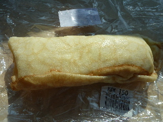
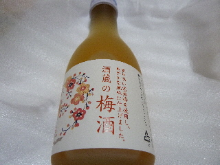
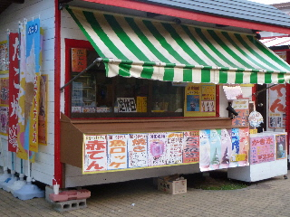
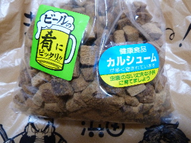
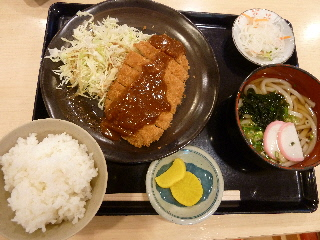
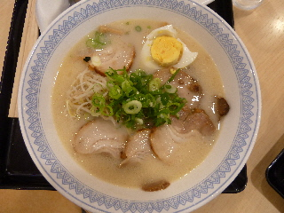
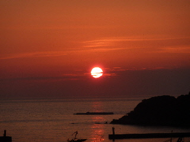
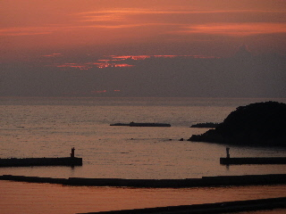

ゆうひパーク浜田でクレープを食べました。
2013/08/04
ちょっと疲れたので、甘いものが食べたいってクレープを買いました。

ブルーベリーのクレープ（150円）です。
クレープ生地がふんわり厚めで、軽い感じでパクッといただきました。
島根県浜田市原井町1203-1
2013/08/04
ちょっと疲れたので、甘いものが食べたいってクレープを買いました。

ブルーベリーのクレープ（150円）です。
クレープ生地がふんわり厚めで、軽い感じでパクッといただきました。
2012/08/16
地酒の梅酒ってあるんですね。

パッケージにもあるんですが、爽やかな感じの梅酒でした。
甘さ控えめで、軽い感じの梅酒でした。
個人的には、地酒気分で買っているので、もっと特徴的な商品が飲みたかったです。
2012/08/16
ゆうひパーク三隅に行ったら閉まっていたので、ゆうひパーク浜田に行きました。

あー！こっちも定休日でやってないー！（ここだけですけどね）
お土産物のお店はやっていたので、買い物しました。

魚のブロックの「マグロクン」です。おつまみにピッタリです。
沢山入って530円です。
濃い味なので、一度に沢山食べないので結構経済的なおつまみでした。
次はフードコードへ行きました。

ポークカツ定食です。（780円）
お肉が柔らかくて良かったです。

チャーシュー麺です。（700円）
チャーシューが焼き豚で、濃い味で美味しかったです。
凝ったチャーシュのラーメンってよくあるんですが、味が飛んでなくなってるものが多いですよね。

食後は丁度夕日の時間になっていました。
夕日スポットなので、沢山の人が夕日を見たり、写真を撮ったりしていました。

夕日が沈むのって早いですね。